Almanya
Almanya
Almanya rotası: 3 bölge, 12 maket. Her maket üç aşamada inşa edilir.
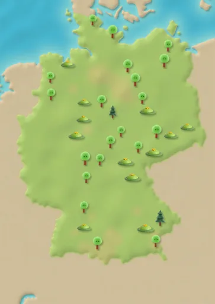
Hamburg
Rota adımı 1–12
Elbphilharmonie
Aşama 1 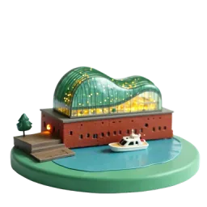
Aşama 2 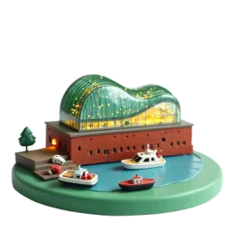
Aşama 3 Bu konser salonu eski bir tuğla deponun üstüne kuruldu ve 11 Ocak 2017'de açıldı. Kaynak: Wikipedia
Speicherstadt depoları
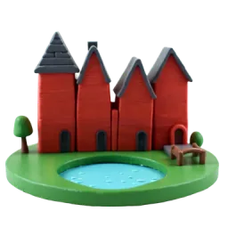
Aşama 1 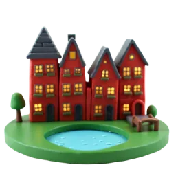
Aşama 2 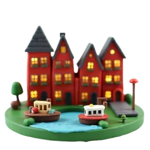
Aşama 3 Speicherstadt, meşe kazıklar üzerinde duran dünyanın en büyük depo bölgesidir. 2015'te UNESCO Dünya Mirası oldu. Kaynak: Wikipedia
Liman ve vinçler
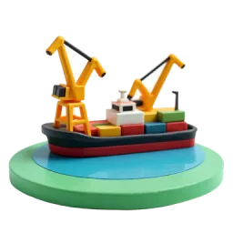
Aşama 1 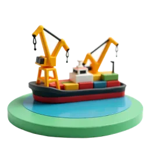
Aşama 2 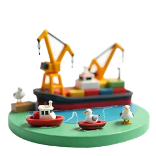
Aşama 3 Hamburg Limanı ‘Dünyaya Açılan Kapı’ diye anılır ve Almanya'nın en büyük deniz limanıdır. Kaynak: Wikipedia
St. Michael Kilisesi
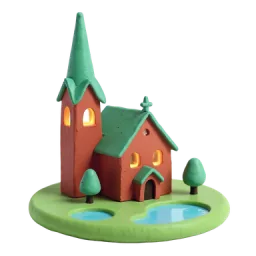
Aşama 1 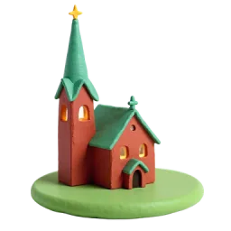
Aşama 2 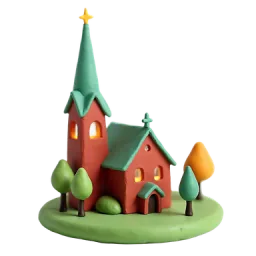
Aşama 3 Kilisenin bakır kaplı 132 metrelik kulesi, uzun zamandır Elbe'den gelen gemilere yol gösteren bir işarettir. Kaynak: Wikipedia
Berlin
Rota adımı 13–24
Brandenburg Kapısı
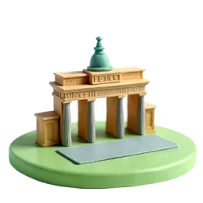
Aşama 1 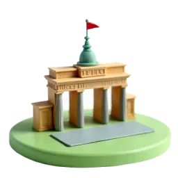
Aşama 2 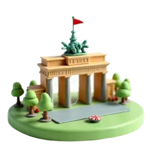
Aşama 3 1788–1791 yılları arasında yapılan kapının tepesinde, dört atın çektiği bir araba heykeli vardır. Kaynak: Wikipedia
TV Kulesi
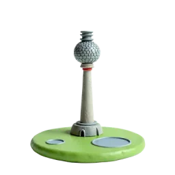
Aşama 1 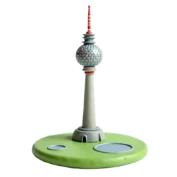
Aşama 2 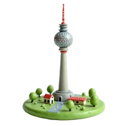
Aşama 3 Anteniyle birlikte 368 metre yüksekliğindeki bu kule, Almanya'nın en yüksek yapısıdır. Kaynak: Wikipedia
Berlin Katedrali
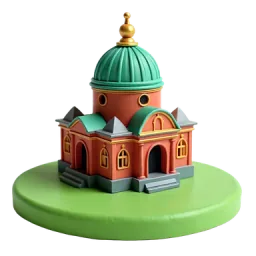
Aşama 1 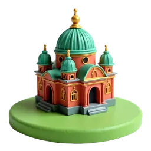
Aşama 2 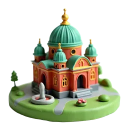
Aşama 3 Bugünkü katedral, İmparator II. Wilhelm'in emriyle 1894–1905 yılları arasında Müzeler Adası'nda yapıldı. Kaynak: Wikipedia
Oberbaum Köprüsü
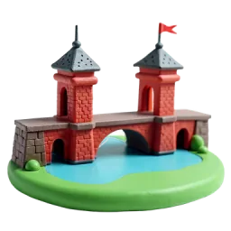
Aşama 1 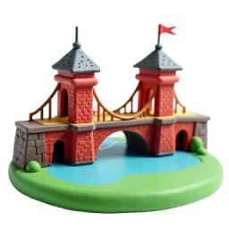
Aşama 2 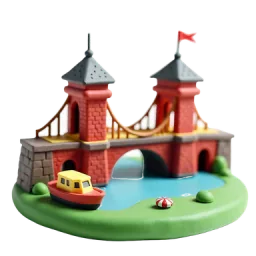
Aşama 3 1896'da açılan bu iki katlı köprünün alt katından arabalar geçer, üst katından ise metro trenleri. Kaynak: Wikipedia
Köln
Rota adımı 25–36
Köln Katedrali
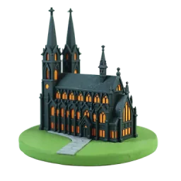
Aşama 1 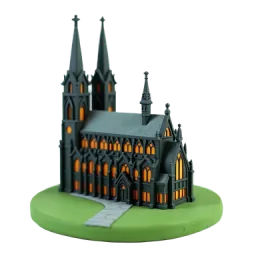
Aşama 2 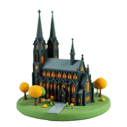
Aşama 3 Katedralin yapımı 1248'de başladı ve ancak 1880'de, ilk plana uygun olarak tamamlandı. Kaynak: Wikipedia
Hohenzollern Köprüsü
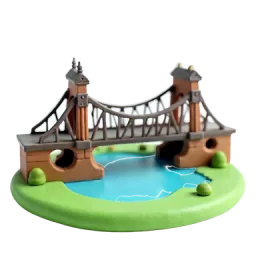
Aşama 1 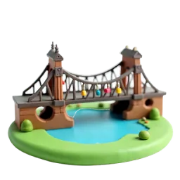
Aşama 2 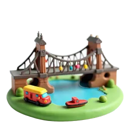
Aşama 3 Almanya'nın en yoğun demiryolu köprüsünden her gün 1.200'den fazla tren geçer; korkulukları aşk kilitleriyle doludur. Kaynak: Wikipedia
Eski şehrin renkli evleri
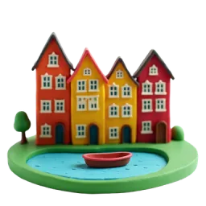
Aşama 1 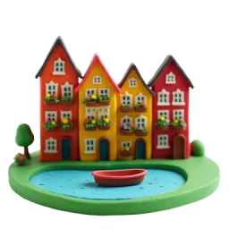
Aşama 2 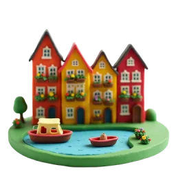
Aşama 3 Renkli evlerin önündeki meydanın adı Fischmarkt, yani balık pazarıdır; bu ad ilk kez 12. yüzyılda kayda geçti. Kaynak: Wikipedia
Ren gezi teknesi
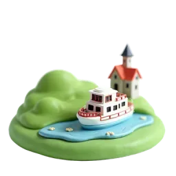
Aşama 1 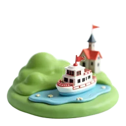
Aşama 2 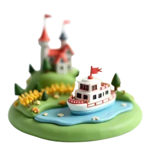
Aşama 3 Yaklaşık 1.230 km uzunluğundaki Ren Nehri, Roma döneminden beri gemilerin yük taşıdığı önemli bir su yoludur. Kaynak: Wikipedia